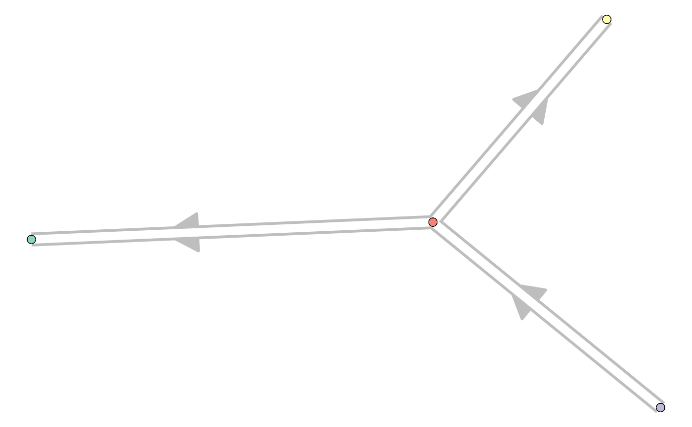

R/wrap_add_cluster_graph.R
add_cluster_graph.RdThis function will generate the milestone_network and progressions.
add_cluster_graph(dataset, milestone_network, grouping = NULL, explicit_splits = FALSE, ...)
| dataset | A dataset created by |
|---|---|
| milestone_network | A network of milestones. |
| grouping | A grouping of the cells, can be a named vector or a dataframe with group_id (character) and cell_id (character) |
| explicit_splits | Whether to make splits specific by adding a starting node. For example: A->B, A->C becomes A->X, X->B, X->C |
| ... | extra information to be stored in the wrapper. |
The trajectory
library(tibble) dataset <- wrap_data(cell_ids = letters) milestone_network <- tibble::tibble(from = c("A", "B", "B"), to = c("B", "C", "D"), directed = TRUE, length = 1) milestone_network#> # A tibble: 3 x 4 #> from to directed length #> <chr> <chr> <lgl> <dbl> #> 1 A B TRUE 1 #> 2 B C TRUE 1 #> 3 B D TRUE 1#> [1] "C" "C" "C" "B" "D" "C" "D" "D" "C" "C" "D" "D" "A" "C" "B" "B" "B" "D" "A" "A" "A" "B" "C" "B" "B" "A"trajectory <- add_cluster_graph(dataset, milestone_network, grouping) if ("dynplot" %in% rownames(installed.packages())) {dynplot::plot_graph(trajectory)}#> Coloring by milestone#> Using milestone_percentages from trajectory